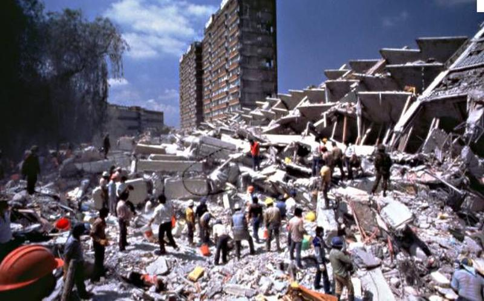
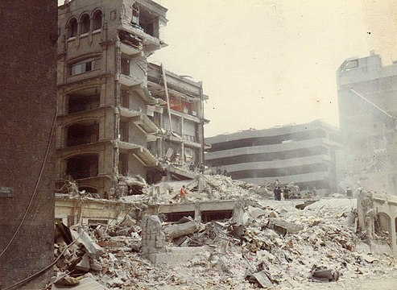
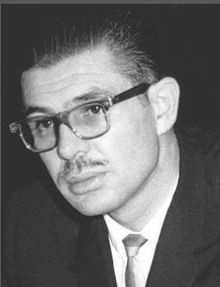
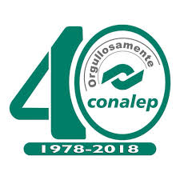

Para establecer el origen del Conalep, es necesario recordar algunos aspectos de nuestra historia, particularmente en el campo de la econom ía. En el siglo XIX prevaleció un perfil nacional definido en gran parte por las actividades de producción minera, agrícola y ganadera. Fue en la segunda mitad del siglo XX, cuando se inició la operación de los primeros ferrocarriles, y en cuanto al personal técnico necesario para que estos funcionaran, se trataba de extranjeros de diversos oríg enes. Así, para atender los requerimientos de trabajadores calificados se tuvo que recurrir a la figura de los "aprendices", que a lo largo de los años llegarían a contar con una rudimentaria capacitación.
Terremoto de México de 1985

El Conalep SPP fue un edificio ubicado entre las calles de Iturbide y Humbolt, en el Centro Histórico de la Ciudad de México, que sucumbió al terremoto de 8.1 grados en escala de Richter el 19 de Septiembre de 1985.3 En esta escuela las clases normalmente daban inicio a las 7 de la mañana en punto, por lo cual ya se encontraban los alumnos en clase. Algunos datos nos indican que en este edificio fallecieron alrededor de 120 personas y algunos desaparecidos. Literalmente este edificio se partió en dos, la parte que daba a la calle de Humbolt quedó de pie y la parte que daba a la calle de Iturbide se desplomó cayendo piso sobre piso y jalando el edificio hacia dicha calle.4
Fundación

El CONALEP fue creado por decreto presidencial en 1978 como un Organismo Público Descentralizado del Gobierno Federal,Fue fundada en abril de 1978 por el ingeniero y político mexicano José Antonio Padilla Segura con personalidad jurídica y patrimonio propio. Su objetivo principal se orientó a la formación de profesionales técnicos, egresados de secundaria. Desde su creación, el CONALEP es la institución educativa para responder a las necesidades de formación de cuadros técnicos que demandan las unidades económicas del aparato productivo del país. Actualmente el CONALEP trabaja para que sus egresados sean capaces de laborar en cualquier empresa o institución a nivel mundial, cimentado en un modelo educativo basado en competencias laborales certificadas, diseñadas en conjunto con los sectores productivos, cuyos principios son la calidad para la competitividad.